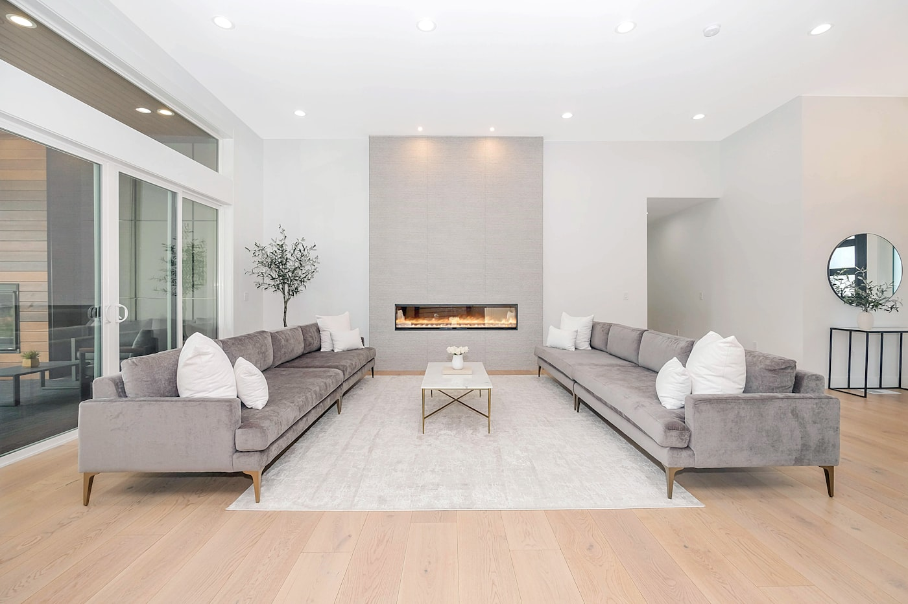
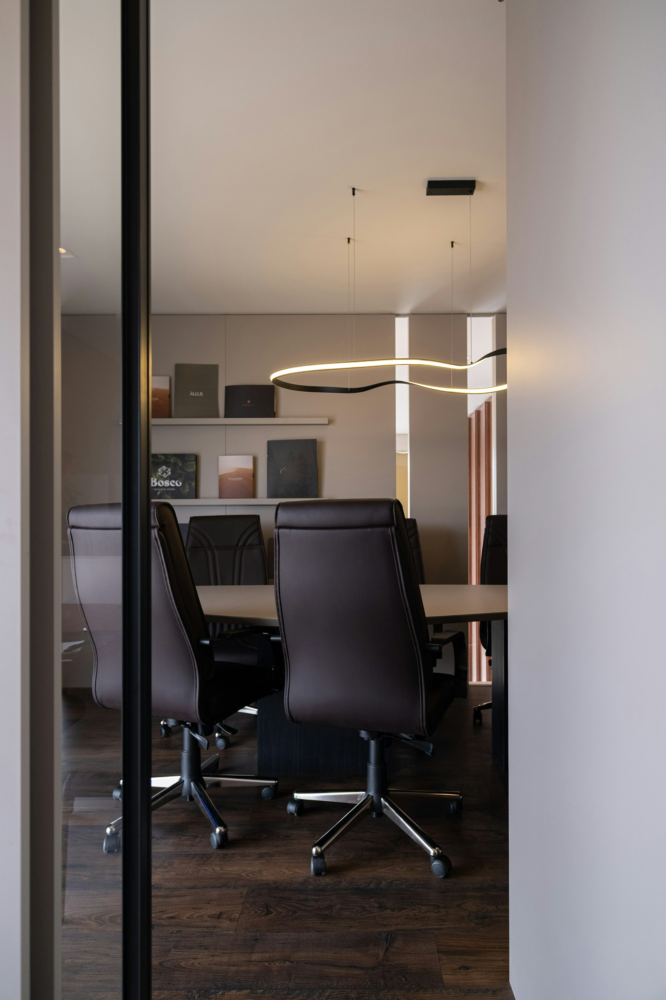
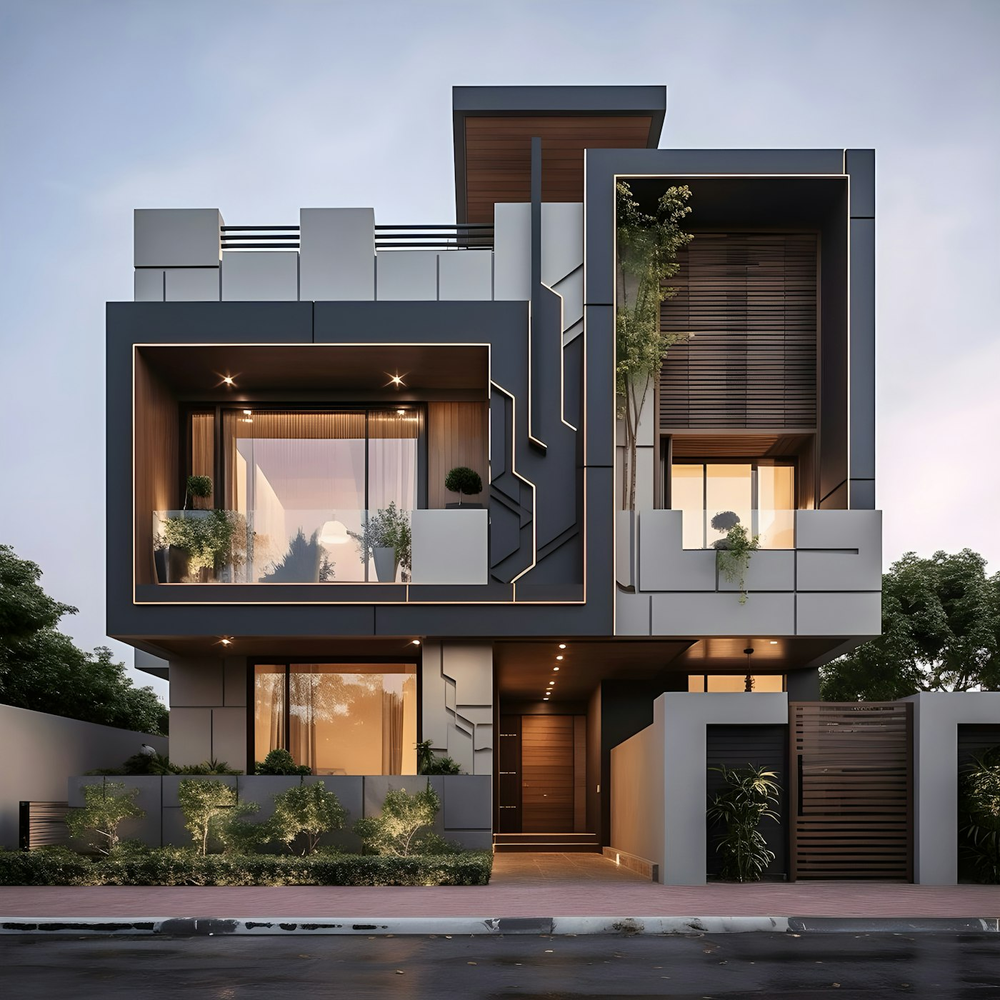
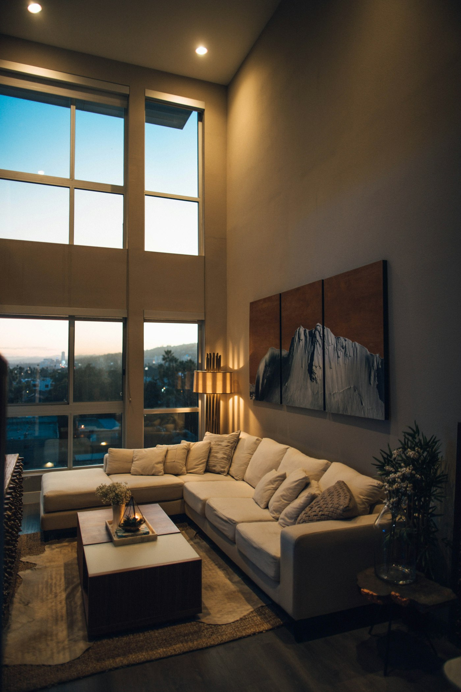
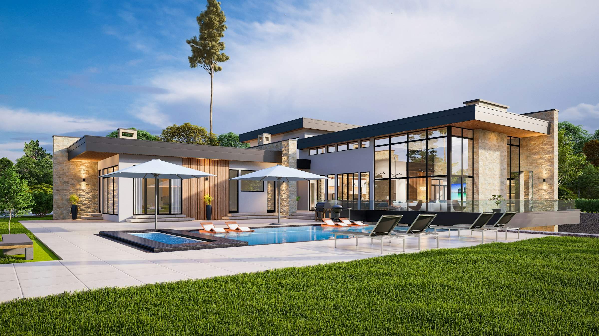
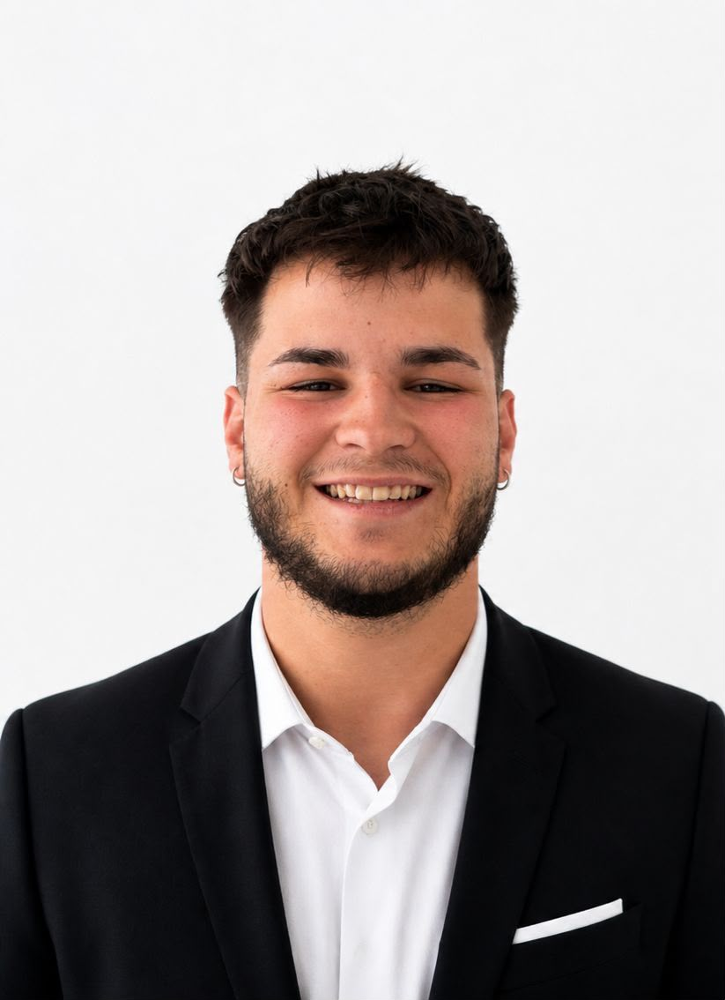

Paid Ads Inmobiliario
Campañas en Meta y Google diseñadas para captar propietarios y compradores cualificados. Sin presupuesto tirado.
Sistemas de captación de leads cualificados para negocios inmobiliarios en activo. Sin portales. Sin referidos. Sin curiosos.
(01) El servicio
Trabajamos con inmobiliarias en activo y con exclusividad por zona: una sola marca por área de captación.
(02) Servicios
Cada pieza existe para reducir el coste por cliente, no para llenar un informe.

Campañas en Meta y Google diseñadas para captar propietarios y compradores cualificados. Sin presupuesto tirado.

El recorrido completo: desde el primer clic hasta la llamada agendada. Sin fricción.

Leads exclusivos para tu agencia. No compartidos, no comprados a terceros. Tuyos.

La presencia digital que hace que los clientes elijan tu agencia antes de llamar a la competencia.

Contenido que posiciona, educa y filtra. No publicaciones para rellenar el feed.

Para agencias que quieren entender qué está fallando en su captación y cómo arreglarlo.
3.200 €
Presupuesto mínimo para empezar. Por debajo de esa cifra no hay sistema que aguante.
6 meses
Duración del contrato. Los primeros resultados llegan hacia los 20 días; antes de 3 meses no garantizamos nada.
1 marca
Exclusividad por zona. Si trabajamos contigo, no trabajamos con tu competencia directa.
(03) El problema
Un portal te alquila la demanda: el día que dejas de pagar, desaparece. Nosotros construimos el canal dentro de tu marca, para que el lead llegue a tu nombre y no al del portal, y para que puedas medir qué te cuesta cada cliente de verdad.
Sin portales. Sin referidos. Sin curiosos.
Una sola marca por área de captación. No abrimos una segunda cuenta en tu mercado.
Coste por lead y coste por cliente, cada semana. Nada de impresiones ni alcance.
Comunicación directa con la CEO durante todo el contrato. Sin capas intermedias.
(04) Cómo trabajamos
Analizamos tu agencia, tu zona y tu competencia para detectar dónde estás perdiendo leads.
Diseñamos el embudo y los canales de captación específicos para tu mercado. Nada genérico.
Activamos las campañas y el sistema de captación exclusivo para tu marca.
Ajustamos semana a semana según coste por lead y calidad real, no métricas de vanidad.
Con el sistema validado, escalamos inversión y ampliamos zonas de captación.
(05) La diferencia
Otras agencias
Melero Realty
(06) Equipo

(07) Preguntas
Si falta algo, escríbenos y te lo contestamos por correo antes de agendar nada.
Trabajamos con inmobiliarias, siempre que estén en activo.
Muchas ganas de crecer y una mentalidad abierta para empezar a trabajar desde la identidad de la marca.
Los primeros resultados se empiezan a ver en torno a 20 días. Antes de 3 meses no se puede garantizar nada: el margen de error es nuestro mejor amigo.
El presupuesto mínimo necesario es de 3.200 €.
Sí.
El contrato tiene una duración de 6 meses.
(08) Siguiente paso
Media hora para revisar de dónde vienen hoy tus leads, qué te cuesta cada cliente y si tu zona sigue libre. Si no encajamos, te lo decimos en la misma llamada.